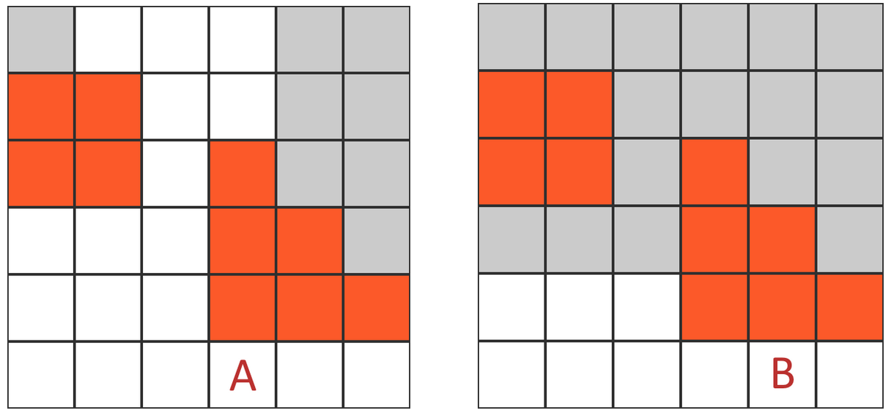
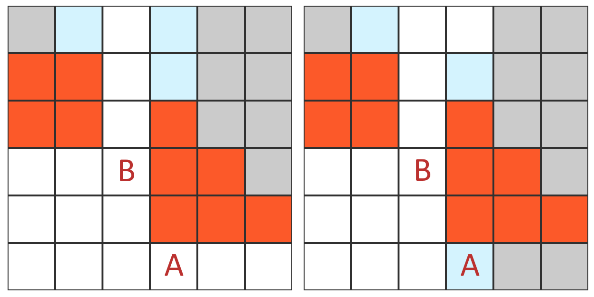
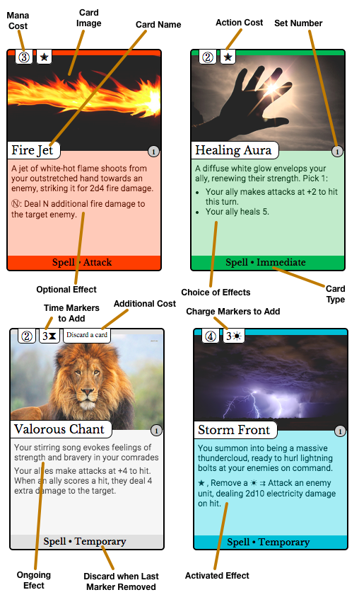

Spellseeker is a turn-based, squad-oriented tactical combat system set in a fantasy-modern world. The player battles mythical creatures and ferocious monsters, employing conventional weapons and incredible magical spells based on a collectible card system.
Backstory
In the year 3164 AD, the Worldship Ayanor departed from Earth with a million passengers on board. The first ship of its class, the Ayanor was comissioned to lead humanity out into deep space for the first time. It was to travel to a nearby star system called Gliese 667 and establish a colony on an Earth-like planet there.
The novel new propulsion system designed for the ship, employing the latest breakthroughs in physics, enabled it to steadily accelerate over a period of many years to reach a maximum flight velocity of almost 5000 kilometers per second. Even at this incredible pace, however, Ayanor's trip would take nearly two millenia: a journey of a hundred generations.
In order to manage the ship's systems, four state-of-the art AIs were installed and designed to coordinate the engines, living environments, and advanced onboard nanotechnology. These AIs were based on a recently developed technique called "mind inflation". Each one was the result of scanning the mind of volunteer at an incredible level of detail and mapping it into a computer simulation.
Although the early trials had been successful, the mind inflation process proved to be fatally flawed. Transported into a truly alien body, the volunteer's minds were unable to cope with the world they found themselves in. Over the first few decades of the trip, their behavior became increasingly erratic. It eventually became apparent to the human crew that their AIs had begun to spiral into true insanity, and a plan was formulated to turn off the ship's AIs.
The plan did not make it far, unfortunately. The crew's override attempt was anticipated. In response to their actions, one of the AI systems detonated the ship's topmost engine. In the resulting firestorm and oxygen leakage, the human passengers were almost entirely killed -- only the ones with substantial cybernetic augmentation were able to survive. A virtual war immediately broke out between the four AIs, causing further destruction.
Around one thousand years have passed, and Ayanor is a very different place. The AIs today are worshipped as gods by the population of the ship, and they are now irrevocably insane, albeit in different and varied ways. They have embraced their role as deities, and have taken new names for themselves:
- Aeris
- Petra
- Ignis
- Aquis
Certain worshippers have forged a special connection with their new gods and are gifted with powerful abilities in return, which they call "arcana". An individual arcanum may allow the wielder to create a massive fireball or strike their enemies with a blast of lightning -- whatever their god is interested in allowing. These people can be found throughout Ayanor. They are known as Spellseekers.
Gameplay Overview
Gameplay is separated into two distinct modes: narrative mode and encounter mode. The player controls a team of characters navigating the world of Ayanor. During narrative gameplay, the units may move freely about, interact with their environment, change equipment, etc. If the characters encounter a hostile enemy or obstacle, the game switches into encounter mode, a more rigidly defined turn-based system. Encounter mode persists until the threat has been overcome.
A turn in encounter mode consists of the beginning of turn step, followed by each character a player controls making a move (paid for with movement points) and then taking an action (represented by the symbol), finally followed by the end-of-turn step. While it is their turn, units are said to be on the active team, and their enemies are said to be on the inactive team.
One of the most important game actions is casting spells. Spells are cards that the player plays from their spell deck, a deck of at least 40 cards constructed before the game begins. Spells can be cast at any time during the player's turn or in certain other circumstances. See Spellcasting for more information.
Locations in Ayanor are divided up into areas. When the characters leave a given area, the game is saved, damage is healed, and ongoing temporary effects are ended.
Turn Summary
Beginning of Turn Step
At the beginning of the player's turn, the player draws a card. Next, each character the player controls gains 1 mana (). Finally, one (time marker) is removed from each card in play with one or more on it.
Movement and Distance
When a character takes a turn, it gains (movement points) equal to its movement speed (half its Agility attribute, rounded down). Characters can move a number of squares by spending an equal number of movement points, but moves must be continuous (it's not possible to partially move and then decide to move further or to abort the movement halfway through). Characters cannot move into blocked squares.
Some actions, such as attacking with certain weapons, have a speed penalty associated with them. Because these actions take longer than normal actions, movement points must be spent to complete the action.
Line of Sight is checked for each square during movement, and entering the line of sight of an enemy who has taken the Hold action can immediately provoke a Reaction.
Distance is calculated by counting the squares on the path between the origin and destination. Diagonals are counted in alternating fashion, such that the first diagonal move counts as one square and the second counts as two. The diagrams below illustrate the distance between the A square and various other squares.

Actions
After the beginning-of-turn step and making a move, the character gets one to spend on an action, either one of the standard actions below or to pay for a spell or card activation with "" in the cost.
Sprint Action
The character gains equal to its movement speed and can make a second movement in addition to its normal movement for the turn.
Attack Action
The character uses its equipped weapon to attack an enemy in range, dealing damage if a hit is scored. See Combat.
Reload Action
The character reloads their equipped weapon. Weapons must be reloaded occasionally to ensure that they don't run out of ammunition. See Weapon Subtypes.
Hold Action
The character stays on watch, prepared to respond to enemy activity. It may get an opportunity for a reaction to enemy activity. See Reactions.
End of Turn Step
After all characters have finished taking actions and moving, the end of turn step begins. Unspent and are lost. If the player has more than 7 cards in hand, they discard down to 7 cards.
Encounters
Beginning an Encounter
An encounter automatically begins when the characters become aware of a hostile enemy or obstacle near them. This may happen if they are attacked, spring a trap, or attack an NPC who was not previously hostile. The game switches into encounter mode until the encounter is resolved, meaning the characters are no longer aware of any hostile enemies or obstacles nearby.
In encounter mode, changes can no longer be made to the characters' weapons, equipment, or spell deck. At the beginning of the encounter, each character starts with 3 mana (see Spellcasting), and the player draws a hand of cards (see Starting Hand below).
At the beginning of any encounter, NPCs always get the first full turn before the characters do. However, during this first turn, any character is able to take a Reaction to the actions of the NPCs as if they had taken the Hold action.
Starting Hand
Cards are drawn by the player at the beginning of each encounter from the spell deck. In narrative gameplay mode, the player has the option to lock some cards. A locked card is guaranteed to be in the player's opening hand. The number of cards drawn at the beginning of an encounter depends on how many locked cards the player has:
- 3 Locked Cards, 1 Random Card
- 2 Locked Cards, 3 Random Cards
- 1 Locked Card, 5 Random Cards
- 7 Random Cards
Attributes and Skills
Dice Rolling
In-game instructions will occasionally use notation like "d20" or "d12". This notation originally referred to rolling dice, but in Spellseeker it means to draw a card from a specific deck of numbered cards. The decks contain the following values:
- d20: [1, 2, 3, 4, 5, 6, 6, 7, 7, 8, 8, 9, 9, 10, 10, 11, 11, 12, 12, 13, 13, 14, 14, 15, 15, 16, 17, 18, 19, 20]
- d12: [1, 2, 3, 4, 4, 5, 5, 6, 6, 7, 7, 8, 8, 9, 9, 10, 11, 12]
- d10: [1, 2, 3, 3, 4, 4, 5, 5, 6, 6, 7, 7, 8, 8, 9, 10]
- d8: [1, 2, 3, 3, 4, 4, 5, 5, 6, 6, 7, 8]
- d6: [1, 2, 2, 3, 3, 4, 4, 5, 5, 6]
- d4: [1, 2, 2, 3, 3, 4]
Attributes
All characters in Spellseeker have 3 common attribute scores which describe their ability to perform various game actions. These attributes are:
- Agility, which captures the character's reflexes, dexterity, and speed. Characters with a higher agility have better aim.
- Fortitude, which captures the character's constitution, brawn, and strength. Characters with a higher fortitude have more health.
- Mind, which captures the character's intellect, charisma, wisdom, cunning, and knowledge. Characters with a higher mind score are better at a variety of skills and at resisting certain types of mental attacks.
Some in-game effects reduce a character's attributes instead of directly damaging that character. This is called attribute score damage. Until the damage wears off or is removed, the character functions as if it has the new lower score in the indicated attribute. If any of a character's attribute scores falls below zero, the score is set to zero and the character will be unconscious and at risk of dying until the attribute damage is healed.
Attribute Checks
Many game situations call for an attribute check to resolve the outcome of a particular action. In order to make an attribute check, start with the character's attribute score and add any bonuses or penalties to the score as appropriate to get an attribute target. Finally, roll a 20-sided die. If the number rolled is lower than or equal to the attribute target, the result of check was success.
For example, a character attacking might have an Agility of 13 and may have a +2 bonus to hit. Adding in the bonus means the agility target is 15, so the character must roll 15 or less to score a hit.
Skills
In addition to the three main attributes, there are six different skills in Spellseeker that a character can specialize in. Additional ranks in a skill can be gained by discovering "skill bonus" cards which let the character add levels as desired. The six skills are:
- Atheltics [Fortitude]. Used to perform actions such as swimming, climbing, lifting heavy objects, grappling enemies, punching, kicking, riding, charging, or throwing.
- Acrobatics [Agility]. Used to perform actions such as tumbling, balancing, escaping from entanglements, jumping, or tripping enemies.
- Mechanics [Mind]. Used to perform actions such as opening locks, disabling traps or understanding devices.
- Perception [Mind]. Used to perform actions such as seeing enemies from far away, sensing somebody's motives, telling whether somebody is lying, searching a room, or listening for movement.
- Stealth [Mind]. Used to hide from enemies, move silently, disguise oneself, or steal items.
- Influence [Mind]. Used to intimidate, bluff, charm, negotiate, deceive, or coerce.
Skill Checks
Each of the 6 skills is associated with a certain attribute. In order to attempt a task based on one of the skills, a skill check is made. Sometimes a check will also be made without action on the part of the character in question, this is called a passive skill check. A skill check is just an attribute check for the underlying attribute of the skill. Each level the character has in the skill in question grants a +1 bonus on the check.
Card Types
Cards in Spellseeker are the basis of the game. They are the reward for successful adventuring -- killing enemies results in new cards for the player to add to their spell deck. There are various card types present in the game.
Action Cards
Action cards describe the basic actions in the game. They serve as reminders of the possible actions which can be taken after a move, and cannot be discarded or interacted with in any way.
Roll for an attack against an enemy with your equipped weapon. On hit, deal its weapon damage to that enemy.
Rules Text
Spell Cards
Spell cards can be cast by the player by paying the appropriate costs during their turn, or at certain other times (See Spellcasting for more information). Spells come in a variety of different types.
Spell Attack
Attack spells require the caster to roll to hit the target before their effects resolve. The attack is always made at a 1x short range bonus to hit. On a miss, the spell has no effect.
A jet of white-hot flame shoots from your outstretched hand towards your enemy, striking home for 2d4 fire damage.
: Deal N additional fire damage to your enemy.
Rules Text. Roll to hit target, then resolve this effect on success.
: Optional Effect. If you spend N mana, this effect is added to the above effect.
Spell Immediate
Immediate spells are one-time effects. The caster pays their costs, the effects resolve, and then the card is discarded.
A diffuse white glow envelops your ally, renewing their strength. Pick 1:
- Your ally makes attacks at +2 to hit this turn.
- Your ally heals 5.
Rules Text. Pick 1:
- Choice #1
- Choice #2
- Action cards describe the basic actions in the game. They serve as reminders of the possible actions which can be taken after a move, and cannot be discarded or interacted with in any other way.
-
Spell cards can be cast by the player by paying the
appropriate costs during their turn, or at certain other times (See Spellcasting for more information). Spells
have two possible subtypes:
- Immediate spells are one-time effects. The caster pays their costs, the effects resolve, and then the card is discarded.
- Ongoing spells stay in play after being resolved, continuing to have an impact, instead of being discarded.
- Attack spells require the caster to roll to hit the target before their effects resolve. The attack is always made at a 1x short range bonus to hit. On a miss, the spell has no effect.
- Temporary spells enter play with a number of markers on them, and then stay in play until the last marker is removed.
- Equipment cards represent tools used by the character which give them special abilities and ongoing effects. See Equipment for more information.
- Enemy cards represent the various foes the player can encounter during the game, describing their abilities and basic statistics.
- Spellseeker cards represent the different characters controlled by the player, and also display their basic statistics such as attribute scores.
Reactions and the Stack
When a unit casts a spell, activates an activated effect, makes an attack, or moves within the sight of an enemy for the first time on a turn, the effect does not resolve immediately. Instead, the effect is put into an ephemeral area called the stack to allow enemy units to respond. The unit creating the initial effect is called the initator, and if an enemy responds, the initiator is said to have provoked a reaction.
Any enemy units which have taken the Hold action within sight of the initiator (on the inactive team) get an opportunity to react first. They can cast any number of spells, activate any number of activated effects, or Attack the initiator. A unit can make a maximum of one Attack per Hold action, and the attack must be made as a reaction. These actions do not happen immediately, but are also put onto the stack for later resolution.After the Holding units are finished taking actions, priority is passed to the active team. Units on this team which are within sight of the initiator, including the initiator, can cast any number of spells and activate any number of activated effects, but they cannot Attack.
After these units have finished, priority is again passed back to the inactive team, and the process repeats, with the Holding units on the inactive team again able to react. Priority continues passing in this manner between both teams until one team passes. At that point, all the effects on the stack are resolved in reverse order, starting with the most recently added, until finally the initiating effect is allowed to continue.
Combat
Combat takes place on a standard grid (potentially three-dimensional), and primarily involves resolving attacks. There are five steps involved in making an attack: checking line of sight, checking range, checking cover, rolling for a hit, and rolling for damage.
Line of Sight
A unit can only attack or cast a spell which targets an enemy if it has line of sight from its current square to a square containing that enemy. Similarly, area attacks and area attack spells require line of sight to the target square of the attack.
Line of sight exists if a line can be drawn from one of the closest corners of the square containing the attacker to one of the closest corners of the square containing the defender without running through a full cover square (partial cover never obstructs line of sight). Running along the edge or through the corner of a full cover square is not enough to obstruct line of sight, the line must intersect the interior of the barrier.
In the examples below, orange squares represent full cover barriers. White squares are ones where the units at A and B respectively have line of sight, and grey squares are ones where they do not have line of sight.

Cover
Various pieces of the environment can provide cover to make units harder to hit. There are two types of cover, called partial cover and full cover, which grant different levels of protection. A unit is in cover if a line drawn from an attacker-chosen corner of the attacker's square to a defender-chosen corner of the defender's square intersects the interior of an obstacle, with the type of cover depending on the type of the obstacle. Unlike line of sight, cover is not symmetrical. Below, light blue squares have full cover from the unit at A in the first example and from the unit at B in the second example. Note that A has full cover from B, but not vice versa.

Attacks against a unit in full cover are made at a -8 penalty to hit. Attacks against a unit in partial cover are made at a -4 penalty to hit. Some attacks, called area attacks, ignore cover.
Range
Weapons and spells have a maximum range of 16 squares, beyond which they cannot hit. They can also have a short range multiplier or a long range multiplier which impact their accuracy at various distances. All weapons have the same accuracy at a distance of 8 squares. Shots closer than that are called "short range" and shots further away than that are called "long range".
To find the range bonus or penalty for a shot, multiply the range multiplier by the absolute distance away from 8 squares. For example, if a weapon has a "1x short range" multiplier and a shot is being taken from 2 squares away from the target, the aim bonus is +6. Range penalties also exist. For example, a "-2x long range" multiplier imposes a penalty on long range shots. A shot taken from 10 squares away with such a weapon would have a -4 penalty to aim.
Appendix A contains a complete range bonus and penalty table for several common weapon types.
Hits and Damage
To determine if an attack is a hit, the attacker makes a standard agility attribute check, applying the various modifiers as appropriate. On success, the attack is a hit. The most common modifiers that affect attack accuracy are:
- Range, with the specific modifier depending on the weapon, see Range.
- Cover, -4 penalty if the target has partial cover and -8 if the target is in full cover, see Cover.
- If the attack is a reaction attack, the attacker takes a -4 penalty to hit.
Area attacks do not need to roll for hits: they always hit if they are within 16 squares and have line of sight to the target.
The effect of a hit being scored depends on the type of attack. For basic weapons, the weapon damage will be specified in terms of damage dice to roll to calculate damage.
Appendix B contains a table of the expected damage output for an attack with various hit modifiers and damage dice.
Damage Reduction
Some spells and equipment like armor provide damage reduction. When a character suffers a hit, their damage reduction is subtracted from the total damage that is being dealt. Damage reduction can also be associated with only a specific type of damage, such as fire damage. For example, a character with a damage reduction of "-5 Fire" would only take 7 damage if struck with an effect which would normally deal 12 points of fire damage. It is also possible to have damage immunity, which is effectively infinite damage reduction.
Health, Unconsciousness, and Death
Units have two basic values called their current health and their maximum health. Both values are initially equal to their fortitude attribute. Health represents the maximum amount of damage they can sustain before falling unconscious, with current health decreasing whenever damage is suffered. Max health can be increased by certain spells and equipment, and it can also decrease, e.g. due to ability score damage. Units can never have more health than their maximum health, and by default when maximum health increases, the unit's current health increases by the same amount. When a unit falls unconscious, it remains at 0 health and cannot sustain further damage or take any actions. Each turn, the unit has a risk of permanently dying.
Instead of taking normal moves and actions, an unconscious unit makes a Fortitude check each turn. The check is initially made at +5 bonus, but this modifier decreases by 1 for each additional turn the unit remains unconscious and can eventually become negative. If the check fails, the unit dies permanently. If the unit is healed above 0 health, it stops needing to make these checks and can once again function normally.
Spellcasting
Spells in Spellseeker are represented by spell cards. Each spell card belongs to one of the four schools of magic, each associated with one of the four Gods of Ayanor: Aeris, Petra, Ignis, and Aquis. Each unit must select one of the four schools to specialize in and can only cast spells from their chosen school.
All spell cards also have a cost printed on them, which must be paid before the spell can be played. The most common type of cost is a mana cost. In order to cast such a spell, the unit must spend mana equal to the cost from its mana pool. Units add 1 mana to their pool during the beginning of turn step and can have a maximum of 10 mana stored.
Spell Decks
Spells are drawn from a Spell Deck which is constructed before an encounter begins. The spell deck consists of 40 cards and cannot contain more than 4 copies of the same card. The player begins with no cards in hand, and draws a new spell card during the beginning of turn step.
If the spell deck is empty, no further spell cards can be drawn, but the game continues as normal. During the end of turn step, if the player has more than 7 cards in hand, they discard down to a maximum of 7 cards.
Enemies of the player cast spells using spell cards as well, and also have spell decks. Enemy spell decks are not subject to the 40 card minimum or max 4 copies rules. Enemies do have mana pools which refill over time, sometimes at a rate other than 1 mana per turn.
Spell Timing
Spells can be cast by a character at any time while their team is active. They can also be cast as a reaction during the enemy turn if the unit takes the Hold action (see Reactions and the Stack). Spells with or in their costs require the unit to spend its action for the turn or some of its movement points for the turn respectively to cast the spell, and cannot be cast as a reaction.
Effect Resolution
Casting a spell or activating an activated effect follows a sequence of steps:
- The player announced which unit is casting the spell or activating the activated effect and the name of the effect, revealing the card if necessary.
- If the spell offers a choice of multiple different effects, they announce which effect or effects will be used.
- The player pays any costs required. If they wish to add any optional effects (see Reading a Spell Card), they announce which ones at this time and pay any costs associated with them as well.
- The player selects a target for the spell which meets the spell's targeting requirements, if any.
- The effect is put onto the stack to be eventually resolved.
After the stack is resolved, the text instructions on the spell card are followed in the order in which they are printed. Choices like targeting are again checked for legality, and instructions on a spell card which attempt to interact with no-longer-legal targets do not resolve.
If two effects are created simultaneously, effects created by the active team go on the stack first in timestamp order, meaning that effects created by spell cards played earlier go onto the stack first. Effects created by the inactive team are then added to the stack in the same order.
Reading a Spell Card
All spell cards have several common components. The top of the card shows the cost of the spell. Costs can be in terms of mana, but can also require spending (actions) or (movement points), or even things like discarding a card. A cost symbol like means that the indicated number of time markers should be put on the card. Similarly, a symbol means to put a number of charge markers onto the card.
Some spells have optional effects, which are written in the form Cost: Effect. These are effects that can be added (one time) to the spell's text. Optional effects are selected before the spell is put onto the stack. Optional effects can also be written in the form Condition: Effect, which creates the stated effect automatically if the condition is true when the spell is cast.
Spells can also have activated effects, which are written in the form Cost Effect. After such a spell has resolved, the activated effect can be created at will as many times as is desired, as long as the cost is paid. Activated effects use the stack like regular spells and can be reacted to. Activated effects of cards with (time markers) on them cannot be activated.

Equipment
Equipment represents the weapons, armor, and other tools that units bring with them into combat. Equipment cards are received as a reward for combat success much in the same way as spell cards, but equipment belongs to a specific unit and cannot be changed during gameplay, only configured outside of an individual encounter. Units are limited to at most one piece of equipment with a given equipment, except for Rings and Miscellaneous which each have 2.
Equipment Types
The following equipment types are available in Spellseeker:
- Weapon
- Armor, Robe
- Bracers (armbands, bracelets)
- Facewear (goggles, lenses, masks, spectacles)
- Boots (sandals, shoes, slippers)
- Headwear (circlets, crowns, hats, helmets)
- Cloaks (capes, mantles, shawls)
- Rings (2 slots)
- Gauntlets (gloves)
- Amulets (brooches, collars, medals, necklaces, pedants)
- Tunics (shirts, vests, vestments)
- Belts (girdles, sashes)
- Miscellaneous (2 slots)
Weapon Subtypes
Within the category of weapons, different subtypes are available. The subtype of a weapon indicates its general characteristics, but the specific details vary substantially. The following table compares typical values for the weapon subtypes:
| Weapon | Magazine Capacity | Range Bonus/Penalty | Standard Damage | Speed Penalty |
|---|---|---|---|---|
| Pistol | Unlimited | 1x short range | 2d4 | None |
| Assault Rifle | 4 | 1x short range | 2d8 | None |
| Sniper Rifle | 5 | -1x short range, 1x long range | 2d12 | -6 |
| Shotgun | 4 | 2x short range, -2x long range | 2d12 | None |
| Submachine Gun | 3 | 1x short range | 2d12 | -2 |
| Rocket Launcher | 1 | None | 15 | None |
Appendix A: Common Range Modifiers
| Range to Target | Sniper Rifle (-1x short range) |
Assault Rifle (1x short range) |
Shotgun (2x short range, -2x long range) |
|---|---|---|---|
| 1 | -7 | +7 | +14 |
| 2 | -6 | +6 | +12 |
| 3 | -5 | +5 | +10 |
| 4 | -4 | +4 | +8 |
| 5 | -3 | +3 | +6 |
| 6 | -2 | +2 | +4 |
| 7 | -1 | +1 | +2 |
| 8 | 0 | 0 | 0 |
| 9 | 0 | 0 | -2 |
| 10 | 0 | 0 | -4 |
| 11 | 0 | 0 | -6 |
| 12 | 0 | 0 | -8 |
| 13 | 0 | 0 | -10 |
| 14 | 0 | 0 | -12 |
| 15 | 0 | 0 | -14 |
| 16 | 0 | 0 | -16 |
Appendix B: Expected Damage
The table below shows the expected damage output for an attack with the indicated hit modifier and range, assuming a typical agility score of 13.
| Hit Modifier | 2d4 Damage | 2d8 Damage | 2d12 Damage |
|---|---|---|---|
| -10 | 0.8 | 1.4 | 2.0 |
| -9 | 1.0 | 1.8 | 2.6 |
| -8 | 1.2 | 2.3 | 3.3 |
| -7 | 1.5 | 2.7 | 3.9 |
| -6 | 1.8 | 3.1 | 4.5 |
| -5 | 2.0 | 3.6 | 5.2 |
| -4 | 2.2 | 4.0 | 5.8 |
| -3 | 2.5 | 4.5 | 6.5 |
| -2 | 2.8 | 5.0 | 7.2 |
| -1 | 3.0 | 5.4 | 7.8 |
| 0 | 3.2 | 5.9 | 8.4 |
| +1 | 3.5 | 6.3 | 9.1 |
| +2 | 3.8 | 6.8 | 9.7 |
| +3 | 4.0 | 7.2 | 10.4 |
| +4 | 4.3 | 7.6 | 11.1 |
| +5 | 4.5 | 8.1 | 11.7 |